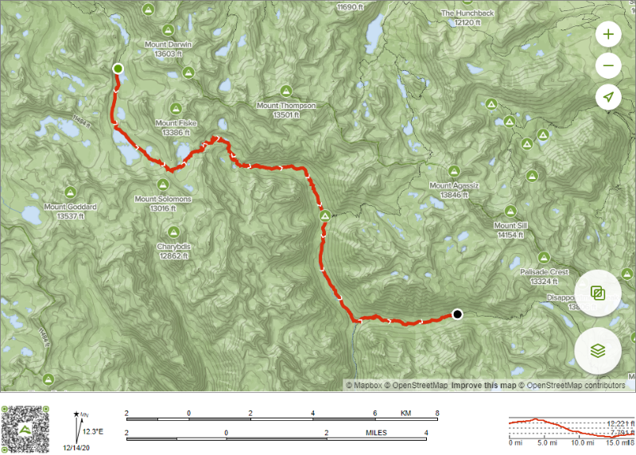

|  |
I really don't know how long it rained last night because I was out like a light and had a great night's sleep. I can finally say that I'm totally used to the sleeping pad now and can subconsciously reposition myself without waking up any more. When I do awake in the early hours of the morning, it is cold and very wet. The sky is perfectly clear and that, combined with the heavy rain has created a torrent of condensation on the inside of my tent. No single walled tent is immune from condensation - the only way to really avoid it is to have a separate rain fly, but few people on the JMT want to carry the extra weight of a rain fly. My tarp tent endeavors to combat condensation by having really open ventilation because the more you can equalize the temperature and humidity inside and out, the less condensation you will get. Usually that works just fine - but not last night under the conditions of heavy rain followed by clear and cold sky. It feels like maybe the temp is in the high 30's so it's tempting to just stay snug in my sleeping bag for awhile. Because of where we're situated in a valley between major peaks, we're not likely to get sun very soon. I could wait until the sun hits me and everything dries out or I could pack up wet and get going over Muir Pass.
OK, I'm out of the warm sleeping bag and starting to pack up. I have not mastered the art of packing when everything is wet (nor is this something I want more practice at), but at least this time there are some big rocks that I can stage things on while I pack up the tent. I've again got that complicated issue that I need to get everything out of the tent and put somewhere so I can pack up the tent itself first and get it in the backpack before everything else goes in the backpack. This is NOT the ideal packing order, but I don't have an easy way to change that. Anyway, I get packed up (tent is soaking wet), eat some oatmeal, grab some snacks for my pocket and I hit the trail right about as the sun is finally getting to our camp. My neighbors are going to wait until things dry before hitting the trail.
 |
I looked at this day on the map the night before (while it was raining) and I realize that this is an opportunity to pick up a day on my schedule. I'm 3-4 miles from Muir Pass so I can get over that early this morning, but it's over 22 miles to Mather Pass from Muir Pass. If I did a 12 mile day today, I'd be 14 miles away from Mather Pass which would probably not get me over Mather Pass tomorrow and certainly wouldn't get me over in the morning before the chances of bad weather kick in. If I could go significantly further than 12 miles, then I'd have a chance at getting over Mather Pass and I might pick up the day that I need to pick up in order to make the second half in the nine days of food that I have. It's a 3900' descent from Muir Pass to the low point on the trail at the intersection of Kings River and Palisade Creek. I guess I'll see how fast I can get there and how much energy I have after that.
Anyway, back to climbing Muir Pass. It's an additional 1000' of climbing to get over Muir Pass, but the approach from the north (my direction) is pretty gentle. There are multiple other lakes to go by and I'm making good time. I see this large group in front of me of almost 15 hikers - a guided trip. I eventually start catching them and slowly pass every one of them. The folks at the back are very accommodating to let me by, but the ones in front make me really work to get by them. I really dislike these large groups on the trail. They really disrupt your own natural pace. You always feel like you're either stuck behind them, like it's a lot of work to get past them or like you're now out in front of them and you don't dare stop and let them pass you. After working hard, I get by them and on the last ascent up to Muir, I feel like I can't possibly afford to stop and let them all go by me so I push harder than I normally would. I've got some spots on my feet that are really bugging me (some toes that are getting pinched by other toes), but I don't want to stop right there so I push up to Muir Pass.
 |
I get to the pass and momentarily have the place to myself and I snap a few pictures (including of the Muir hut that's built as an emergency shelter), but I know this big group is about to arrive and I want to get going again, long before they do so I just don't have to deal with them.
 |
As they arrive, I start working on my feet and, as soon as I've taped up my toes, I start the descent. It doesn't dawn on me at the time as I'm kind of caught up in staying in front of this big group and putting a lot of miles in today, but I made Muir Pass, early in the day, hiking solo and with a heavy pack. I can actually do this! I've got two toes that are bothering me, the little toe on the right foot and the second to little toe on the left foot. In both cases, they are getting wedged underneath the toe next to them and that's causing a fold of skin to get pinched on every step. It's not technically a blister, but it can get quite painful. My fix at Muir Pass is to take some of my Gorilla tape and wrap each of the offending toes with tape. This tape is thick and stiff so hopefully it will help protect them. On the left foot, it seems like the tape I just put on will rub against the neighboring toe so I tape that one too. Then, that toe's tape seems like it will rub on the one next to it so I tape it too. So, I've got four toes wrapped in tape. Hopefully it works. Since I know I've got a lot of downhill, I snug up the ankle laces a bit more on the boots and keep my feet from sliding forward.
 |
 |
As always, long descents are a mixed bag of tricks. You aren't challenged for cardio like you are on the high altitude climbs, but the relentless downhill really takes its toll on your muscles and joints and it's definitely easier to fall on a descent than a climb. The next five miles are nothing but descending down giant granite boulders. The landscape is nothing but rock. There are numerous small glacial lakes and lots of little tributaries running from the night's rain, including many running down the trail. Water will be no problem all day as you can pretty much have water whenever you want it.
 |

 |
When you cross one of these major passes and start descending, it's kind of cool to realize that you're literally at the headwaters of a major river. By the time this little creek flowing out of this glacial lake gets to the central valley, it's going to be a big river (in this case the Kings River). In fact, what I'm following for more than half a day is the Middle Fork of the Kings River right from where it starts. Eventually, at the low point for the day, I'll reach a point where the Kings River continues south or west in its descent to the Central Valley and I'll turn to the south or east (e.g. to the left) and start climbing up a tributary river/creek to the next pass. That's pretty much how the 2nd half of this trip works. Today, I follow the Middle Fork of the King's River down to 8070' and then turn left and follow the Palisade Creek up to Mather Pass.
I find this descent to be really long and not really fun. I did about 3 miles before Muir Pass and then it's 11.3 miles of descending just to get to the low point for the day. Without any serious stops that would be almost 6 hours of descending (I tend to average around 2mph), maybe a little less because it's all descending. The trail initially descends among some large boulders and it's generally following the creek down the center of the valley, but there are plenty of places where it takes it's own path too. At times, it's hard to follow the trail because it's often really just a slightly less rocky pathway with no discernible actual trail. At one point, I come to a point next to the river and I really have no idea where the trail is. Apparently, I lost the trail somewhere above me (perhaps it crossed over the creek), but I don't see it now on either side of the creek among all these large boulders and I don't really want to climb back up again and try to find it. I pull out the map and can see that the trail is just following this creek so I reason that if I just keep going down the creek, making my own way across the boulders, I'll find the trail again. After 10 minutes of boulder scrambling down the creek, sure enough I see the trail on the other side of the creek. I find a place to cross and now I'm back on the trail. As it turns out, this is the only place on the entire JMT where I actually lose the trail.
After taking a food/water break after about an hour of descending, I run into Diane again. As seems to be her pattern, she camped lower than me (at Evolution Lake), but got up earlier than me and went by me while I was still in camp. She's taking another midday break (like yesterday) to dry her stuff out from last night. We chat for a few minutes and then I head on. She wonders where the father/son is that she's been hiking with, but I haven't seen them since Piute Creek. I find out that Diane has also done the Appalachian Trail so she knows through-hiking. She's easy to find on the trail because she wears a very distinctive hat - woven from some type of flat leaf and shaped like a cone with a point on top. The subject of the large, guided group comes up and she tells me that they are resupplying at LeConte so we we should be able to stay ahead of them easily. Anyway, she's going to be there for awhile drying things out and I'm trying to put on a lot of miles so I forge ahead.
The first part of the descent is pretty uniformly steep and there's just no rest from it. You use the hiking poles to stabilize yourself and the brain works constantly figuring out where to place each foot for the next step. At one point, as I'm lifting one foot off the ground to make a big step down, my other foot slips on some loose gravel and I completely lose my balance. I'm on a steep slope and the trail is lined with some larger boulders. I land on my side right between two of the boulders and it's the lower part of the backpack that takes the brunt of the impact. It all happened so quickly that I just lay there kind of stunned. By all means that was a pretty significant impact and something could be broken or hurt, but I'm not feeling any pain. I slowly take inventory. My left knee is a bit stiff - nope that's normal. My butt feels like I just sat down really hard, but nothing is actually hurting. I check the lower parts of the pack to see if anything down there is damaged - nope everything seems fine. Wow, that was really lucky - nothing is hurt at all. I dust myself off and make a mental note that there should be no more of those as it would be really easy to end my hike right there with one of those falls. You'll be happy to know that I never did fall again. I stumbled and tripped numerous times, usually late in the day when the body gets lazy and doesn't pick up your feet as much as it should, but I never fell again.
The rest of the descent is just long. As I'm coming down the trail, I see the "shark mouth" rock that I've seen in pictures before. I knew I'd probably see it somewhere, but wasn't really paying attention to which segment it would be in. OK, I guess I have to stop and take my picture in the shark mouth and it's probably time for a food break anyway. I take the usual picture from my mini-tripod with self-timer and confirm that it came out OK and then I'm off again.
 |
I finally start to get down into LeConte Canyon and see Big Pete Meadow, Little Pete Meadow and the trail junction into Dusy Basin. It's these trail junctions that confirm for you exactly where you are on the map. I've still got 3.4 more miles to the low spot on the King's River before I make the turn up towards Mather Pass.
 |
I pass Grouse Meadow which is where my camp neighbors from the previous night were talking about camping and I'm wondering if one could actually get over Mather the next day if you camped there or if it would take an extra day. Anyway, I finally get to the Road's End trail junction and turn up Palisade Creek. At this point, it's kind of a hot sweaty afternoon. I'm down all the way to 8070' and it's definitely warmer down here and I realize that I haven't had a bath in 3 days because of the evening rainstorms. As I start going uphill again after 11.3 miles of downhill and 14.5 miles in total, it takes awhile for my body to shift gears and start being efficient about going uphill. I'm imagining that the body literally needs to shift the amount of bloodflow to different muscle groups as you start going uphill and that takes a little bit of time for the body to realize that this is the new normal for the hike and it needs to make that switchover. Once the machine gets going, I actually feel pretty strong. It's low altitude (relative to the previous 24hrs) so there's plenty of air and I'm feeling pretty good. My tentative goal here is Deer Meadow or a bit beyond that which looks like it's about 4 more miles.
 |
About a mile into the climb the trail comes right next to the river and there's a perfect swimming hole. The sun is out and it's hot - I'm going swimming. I strip down to just my underwear, put on my sandals and step into the water. The swim always sounds like such a great idea and then when you step into that water and realize how cold it is - woah the brain starts to reevaluate. I rinse off my legs as I start to get use to the water a bit. I'm not sure I can bring myself to just go all the way in and swim around so instead I dunk my head into the water and thoroughly rinse out my hair. I'm thinking about perhaps just splashing my upper body to rinse it out, but then finally I get up the nerve to plunge in and rinse off completely. I get out quickly and the warm air feels great immediately. After toweling off a bit, I then wash some clothes. I figure that I'll just wear these underwear and let them dry that way. I'll wash my long sleeve shirt and then wear it too so it will dry. I'll wash some socks for tomorrow and hopefully they'll get dry hanging on the pack in the remaining part of the day. Wow, it really feels great to get clean again. You do get kind of used to the normal trail condition, but it still feels great when you can get clean.
I get my boots back on and start hiking again, but I realize that the heel padding in both my boots has completely come apart. So far, the problem is only on the inside and only with the padding so the structure of the back of the boot is still OK, but this isn't good if my boots are falling apart. I've got at least 6 more days of major hiking. I'm going to have to keep my eye on this as we go and I start to wonder what would happen if my boots really did start to come apart. I guess I'd have to hike out to the east and buy new boots (and some more food) or quit the hike. The rest of the evening is pretty uneventful. When I get to Deer Meadow, it feels like I could probably go a little further. I'm very tired, but also kind of in a zone and able to just keep hiking. There was some threatening weather off to one side of the canyon a little while ago, but it seems to have passed to the west and behind. According to the map, the trail touches on the creek several more times in the next mile so I'll keep going a little further and then find a place to camp in one of those spots where the trail is near the river. I'm working under the assumption that the closer I can get to Mather Pass, the better off I'll be tomorrow.
After about 30 minutes more (about a mile), I can see that the trail is going to start ascending soon and leaving the river so here's where I should find a spot to camp. It's a lot easier to find a spot for just a solo hiker than it was when there were four of us and I find several candidate spots. I'm mostly just looking for a semi-level spot for the tent that doesn't look like it would be in a run-off stream if it rained that's not too far from the creek and not too close to the trail. If it has logs or rocks nearby for sitting and setting things on that's even better. I find one spot that would do and I drop my pack there and look around some more. I find a better spot up the creek a bit so I go get my pack, but as I'm coming up to the better spot, I realize that it's right next to some other campers (that I didn't notice before). I don't want to camp that close to someone else so I walk up the creek a little more and find a small spot that's good for one person. This will do. This is the latest in the day I've been hiking so I need to get things going pretty quickly. Get the tent set up, purify 2 liters of water, get dinner rehydrating, hang up wet clothes is the order to attack things. Hmmm, when I pull the tent out, I realize it is soaking wet from the previous night. OK, change of plans. Put up clothesline and hang the tent on it to get it dry. I'll still go through the same list, but the tent will get set up last. Fortunately, there's no threat of rain right away so that shouldn't be a problem. I eat and clean up after dinner and it's already getting dark. I get the tent set up, secure everything for the night and I crash quickly. This was a very long day for me - I estimate around 18 miles.